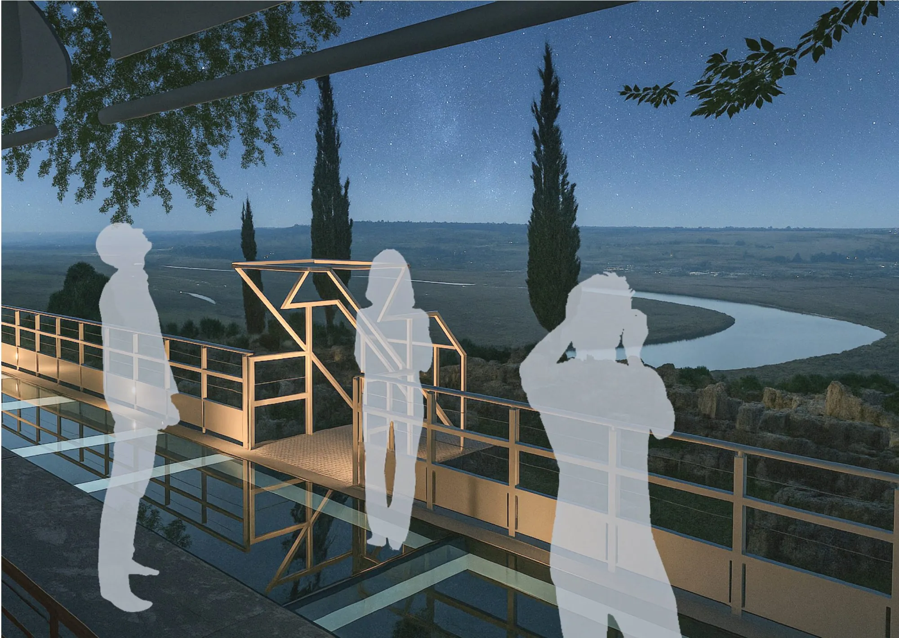
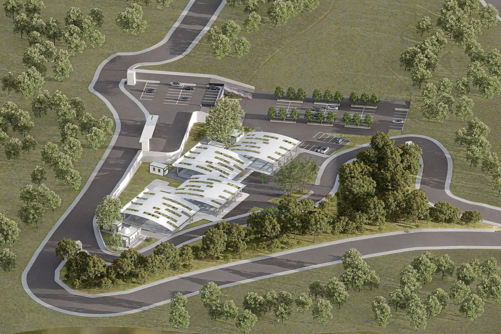

Youssef El Harchaoui
I design buildings from the first sketch to the technical detail: housing, public facilities and heritage landscapes across northern Morocco.
Now showing —
Graduated from ENA Tétouan, I design quality architecture from the first sketch to technical delivery. I use drawing and 3D modelling to bring ideas to life. Rigorous and a good listener, I enjoy teamwork and collaborating with every trade to deliver real buildings.
Six projects, from a window to a whole landscape.
Academic projects from ENA Tétouan: public facilities, housing, heritage and landscape. Open a project for its drawings, renders and details.
View Center Tétouan
Shopping centre
Tétouan
2024
02
Résidence Seniors
Senior housing & care
Tétouan
2024
03
 Lixus, a historic landscape
Urban & landscape project
Larache
2025
04
Archaeology Museum
Museum
Lixus, Larache
2025
05
Pavillons du Repos
Eco-tourism lodging
Lixus, Larache
2025
06
Lixus, a historic landscape
Urban & landscape project
Larache
2025
04
Archaeology Museum
Museum
Lixus, Larache
2025
05
Pavillons du Repos
Eco-tourism lodging
Lixus, Larache
2025
06

Livestock Market Public facility Tétouan 2025From the building site to the drawing board.
Download CV↓Work
-
2025 — 2026
Architect
Cabinet Aamiar, Tétouan · Cabinet Badr Eddine Mohamed El Ayadi, Larache
Residential and commercial projects, from the sketch phase to final modelling.
-
2024
Architecture & urban planning intern
Commune Urbaine de Tétouan
Building-permit review and site plans for public works, working within public-policy frameworks to bring stakeholders around a shared vision for the territory.
-
2020
Site intern
Cabinet Choukri Bouthaina, Larache
Site follow-up and team coordination to keep the work technically feasible and on schedule.
Education
-
2019 — 2025
Architect’s degree (Bac+6)
École Nationale d’Architecture (ENA), Tétouan
-
2018 — 2019
Engineering sciences (Bac+1)
ENSA, Tanger
- Revit
- Archicad
- AutoCAD
- Rhino
- SketchUp
- Lumion
- V-Ray
- Photoshop
- InDesign
- GIS (basics)
- FrenchFluent
- EnglishFluent
- ArabicNative
- SpanishBeginner
Open to opportunities
Let's build something together.
Looking for an architect who can carry a project from the first sketch to the construction detail? I’d be glad to talk about a position, a collaboration or your next project.
Book a call↗